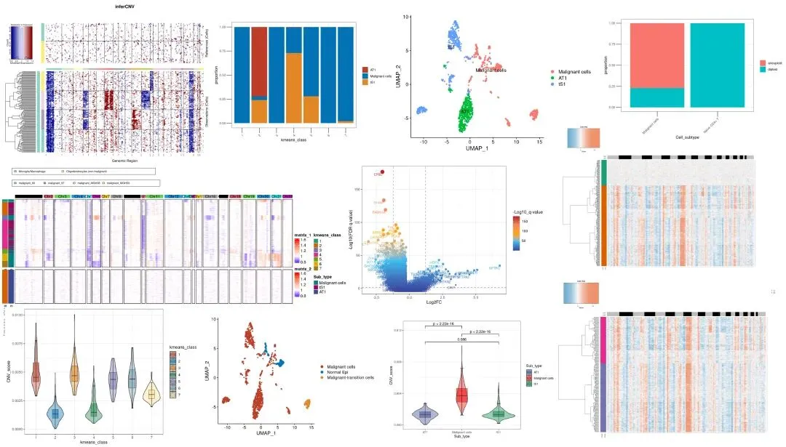
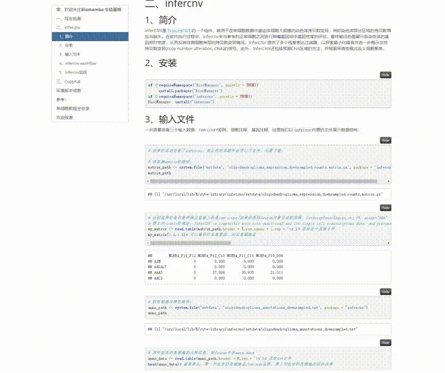
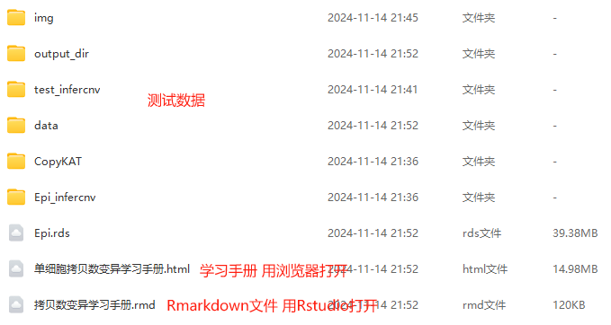

单细胞拷贝数变异学习手册
原文：https://mp.weixin.qq.com/s?__biz=MzAwMzIzOTk5OQ==&mid=2247522733&idx=1&sn=4e3a0707fd8f83b5ad9377bc91ee8e53&chksm=9b3ce0fdac4b69ebf301818e3cccb668f443f66807d2a97edc463721d48392b52e10a262dfa7#rd 合集：单细胞教程全收录

学习手册

 拷贝数变异 （Copy Number Variation, CNV）是指基因组中某些片段在个体间存在的拷贝数差异。与单核苷酸多态性（SNP）相比，拷贝数变异涉及较大的DNA片段 ，长度通常从几百个碱基到几百万个碱基不等。这些变异可以表现为基因组某些区域的重复（扩增）或缺失（删失） 。CNV在个体间的遗传差异中扮演了重要角色，它们不仅影响基因的表达水平，还与多种复杂性状和疾病(自闭症、精神分裂症、心血管疾病)有关。例如，某些癌症类型往往伴随基因的扩增或缺失 ，而这种基因剂量的变化可能会影响肿瘤的发生、发展和对治疗的响应。肿瘤的发生与发展往往伴随着基因组的不稳定 ，通常伴随着基因的扩增或缺失(例如MYC、EGFR、HER2等)。对于CNV的研究对于肿瘤分类与亚型识别、肿瘤转移机制、预后预测、靶点发现、个性化治疗、耐药机制发现、液体活检具有重要意义。目前单细胞应用最成功的便是肿瘤领域 ，cnv分析结合单细胞技术能够有助于肿瘤细胞异质性 、肿瘤进化与克隆结构分析、正常细胞与癌细胞的区分(这个最常用)等方面研究的开展。然而，大规模数据集分析的一个主要挑战是将肿瘤细胞与肿瘤微环境中的基质细胞和免疫细胞区分开来，以便可以独立研究它们。区分肿瘤与正常细胞的一种有效方法涉及鉴定非整倍体拷贝数谱(这在大多数人类肿瘤中很常见，但在具有二倍体基因组的基质细胞类型中未发现)。最常用的单细胞级别CNV工具为infercnv 与copykat ，这里我们以这两个工具进行演示。本教程基于Linux中的Rstudio环境演示，计算资源不足的同学可参考：
生信分析为什么要使用服务器？
足够支持你完成硕博生涯的生信环境
配置一个心仪的工作站(硬件+环境配置)
独享服务器，生信分析不求人
为实验室准备一份生物信息学不动产
拷贝数变异 （Copy Number Variation, CNV）是指基因组中某些片段在个体间存在的拷贝数差异。与单核苷酸多态性（SNP）相比，拷贝数变异涉及较大的DNA片段 ，长度通常从几百个碱基到几百万个碱基不等。这些变异可以表现为基因组某些区域的重复（扩增）或缺失（删失） 。CNV在个体间的遗传差异中扮演了重要角色，它们不仅影响基因的表达水平，还与多种复杂性状和疾病(自闭症、精神分裂症、心血管疾病)有关。例如，某些癌症类型往往伴随基因的扩增或缺失 ，而这种基因剂量的变化可能会影响肿瘤的发生、发展和对治疗的响应。肿瘤的发生与发展往往伴随着基因组的不稳定 ，通常伴随着基因的扩增或缺失(例如MYC、EGFR、HER2等)。对于CNV的研究对于肿瘤分类与亚型识别、肿瘤转移机制、预后预测、靶点发现、个性化治疗、耐药机制发现、液体活检具有重要意义。目前单细胞应用最成功的便是肿瘤领域 ，cnv分析结合单细胞技术能够有助于肿瘤细胞异质性 、肿瘤进化与克隆结构分析、正常细胞与癌细胞的区分(这个最常用)等方面研究的开展。然而，大规模数据集分析的一个主要挑战是将肿瘤细胞与肿瘤微环境中的基质细胞和免疫细胞区分开来，以便可以独立研究它们。区分肿瘤与正常细胞的一种有效方法涉及鉴定非整倍体拷贝数谱(这在大多数人类肿瘤中很常见，但在具有二倍体基因组的基质细胞类型中未发现)。最常用的单细胞级别CNV工具为infercnv 与copykat ，这里我们以这两个工具进行演示。本教程基于Linux中的Rstudio环境演示，计算资源不足的同学可参考：
生信分析为什么要使用服务器？
足够支持你完成硕博生涯的生信环境
配置一个心仪的工作站(硬件+环境配置)
独享服务器，生信分析不求人
为实验室准备一份生物信息学不动产
本教程可视化集锦：

-Biomamba

所见即所得
学习手册以html文件格式提供，可在浏览器中打开并翻阅学习

教程目录 ：
一、写在前面
二、infercnv
1、简介 2、安装3、输入文件4、infercnv workflow5、infercnv实战 5.1 数据概况 5.2 infercnv流程 5.3 热图优化 5.4 小提琴图
三、CopyKat
1、CopyKat介绍
(1)简介 (2)CopyKAT工作流程描述(3)性能评估 (4)实体瘤中肿瘤细胞和正常细胞的分类 (5)应用与其它scRNA-seq技术 (6)推断乳腺肿瘤的克隆亚结构 (7)小结
2、CopyKAT流程
(1)安装(2)counts矩阵处理(3)常用参数(4)CopyKAT(5)整理数据 (6)绘制热图
3、CopyKAT实战
(1)数据概况(2)CopyKAT(3)整理数据 (4)热图绘制 (5)探究拷贝数变异亚群间关系(6)CNA score小提琴图
环境版本信息
文末下载链接中包含的内容：

测试文件约18GB ，大家注意按需下载！
解锁前需阅读：龙年订阅须知

文末还可解锁以下内容


龙年订阅合集持续更新中，联系客服微信[Biomamba_kefu]可以119￥获取全部资料(包括今年后面更新的内容)。当然，付费不是目的，以下资料都可以通过转发领取(更推荐这种方式)。
龙年订阅须知 单细胞Figure 1常见图表 快速上手Seurat V5 机器学习基础手册 scRNA-Seq学习手册Seurat V4修订版 Bulk RNASeq| 转录组实战scRNA-Seq双细胞过滤手册 CellChat空转细胞通讯合辑 scRNA-Seq学习手册Seurat V5更新版 SCENIC转录因子调控网络图 scATAC分析学习手册

订阅后获取学习手册下载链接：